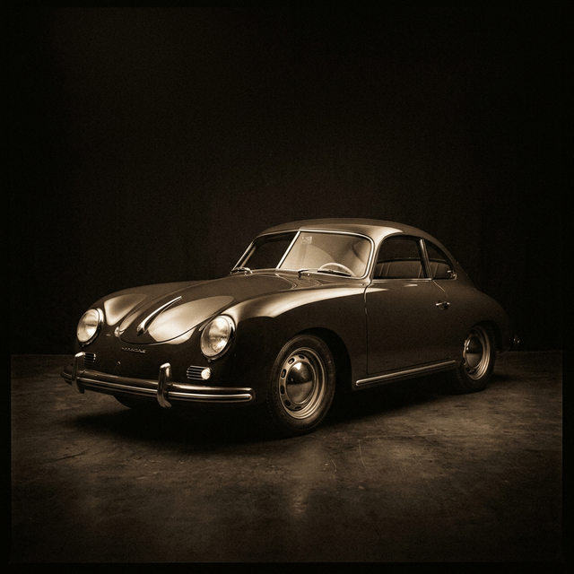

1948
The Origin Thesis
Ferry Porsche built the 356 because no existing car met his standard. Not a reaction to market demand—a rejection of mediocrity. 1,100 cc. 40 hp. The blueprint for every Porsche that followed.
356/1
1,131 cc
40 HP